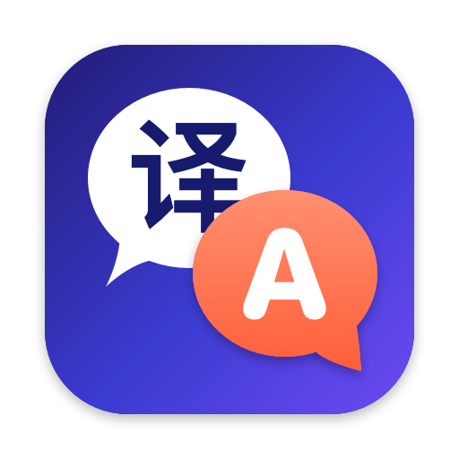

One-step reply
They write in theirs, you write in yours.
The message is translated into your language. Write your reply, press ⌘↩, and it comes out in the sender's language: Chinese back to Chinese, Japanese back to Japanese.
Mac translator · Chinese, English, Japanese
Select any text and understand it in place. Get a message in Chinese or Japanese, write your reply in English, and Suiyi sends it back in their language — still sounding like you.
Three languages
Everyone picks “My language” in Settings. Foreign text is translated into yours; your reply goes back in the sender's.
Chen
My language: 中文
Emma
My language: English
Ken
My language: 日本語
When the selection is already in your language, it goes into your “usual outgoing language” — handy for turning an email you wrote into Japanese in one step. The app's interface follows your system language too: Simplified Chinese, English or Japanese.
Why
Without leaving the window you're in.
Features
One-step reply
The message is translated into your language. Write your reply, press ⌘↩, and it comes out in the sender's language: Chinese back to Chinese, Japanese back to Japanese.
Understands context
Suiyi looks at the current app, the window title and the text around your selection. Terminal errors, casual chat and polite email each get the right tone.
ship it Friday
Rewrite
Switch the card to Rewrite or press ⌥⌘R for three versions in the same language — Chinese, English or Japanese. Replace the original in one click when it's editable.
I just wanted to check in and see how things are going with this.
Sounds like you Off by default
Turn it on and Suiyi builds a style profile from your history, so replies match your usual tone and length. The files stay on your Mac.
~/.suiyi/history.jsonl
~/.suiyi/profile.md
Codex and Claude Code can read the same profile, so they write like you too.
Native macOS
Lives in the menu bar, no Dock icon. The card uses the system's frosted glass and follows light and dark mode; the interface follows your system language. Press Esc or click away to dismiss.
Privacy
Suiyi has no servers of its own. Requests go only to the model API you configure.
No analytics of any kind. Selected text isn't written to disk by default.
Your API key lives in the macOS Keychain. You choose the endpoint and model.
Point it at a local Ollama and nothing leaves your Mac.
Never triggers in password fields or Secure Input, and you can exclude apps.
To be precise: when translating, the selected text, the app name, the window title and nearby text are sent to your configured API. If an app doesn't expose the selection, Suiyi reads the clipboard once and restores it right away. With “Sounds like you” on, your style profile is sent along with replies. “Check for Updates” reads a version file from this site only when you click it.
FAQ
Any pair of Chinese, English and Japanese. Pick “My language” in Settings: foreign text goes into your language, your language goes into your “usual outgoing language”, and replies go back in the sender's language. Other languages such as Korean or French can be translated into your language too.
It follows your macOS language: Simplified Chinese, English or Japanese. Other system languages show English.
Yes. Any OpenAI-compatible API works — DeepSeek by default, or OpenAI, OpenRouter, or a local Ollama. Usage is billed by your provider.
Reading your selection and replacing it with a rewrite both require this macOS permission. Suiyi can't work without it.
Not by default. Only when you turn on “Sounds like you” are history and the style profile kept on your Mac in ~/.suiyi, and you can delete them any time.
Most apps where you can select text: browsers, Slack, Teams, Mail, terminals and more. You can exclude apps in Settings.

Download it and follow the steps below — you'll be set up in minutes.
Download Suiyi (.zip)Once you have the zip, these five steps get you going.
Unzip, drag Suiyi.app into your Applications folder and open it.
If macOS says the developer cannot be verified, open System Settings › Privacy & Security, scroll to the bottom, click “Open Anyway” and confirm. Only needed once.
When asked, turn on Suiyi in System Settings › Privacy & Security › Accessibility, then quit and reopen Suiyi.
Click the Suiyi icon in the menu bar › Settings…, enter an API key (any OpenAI-compatible API; DeepSeek by default), click Test Connection, then Save.
Choose “My language” in Settings. Then select text in any app and click the small button to translate; ⌥⌘T translates, ⌥⌘R rewrites.
Can't find “Open Anyway” in step 2? Run this in Terminal:xattr -dr com.apple.quarantine /Applications/Suiyi.app